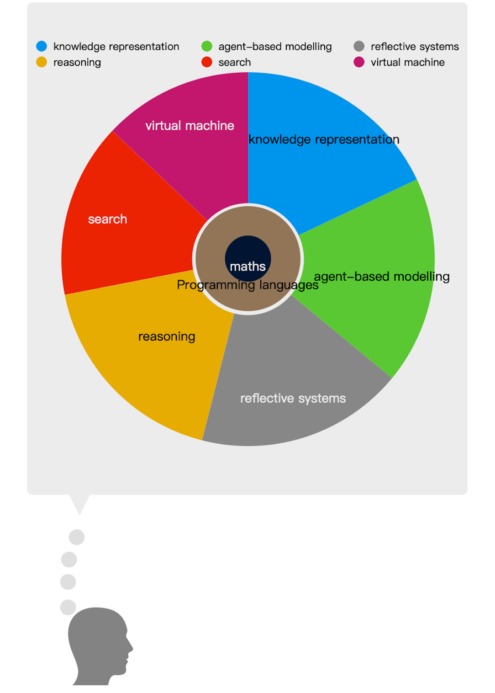

The downloaded pdf includes internal links for navigation and enables you to use the outline.
Open study notes pdfIntegrating search into programming languages led to Prolog, Planner and truth-maintenance system (footnote 47). Rule-based system and Amb was practiced in study notes\assignment 2 (freshmanAdvisor).
NetLogo is a dialect of Logo which itself can be modified from a Lisp interpreter.
Purely functional Haskell vs. Lean (lazy evaluation vs. eager evaluation).
ACT-R was implemented in Common Lisp.
